AIT3018 · Học kỳ I, năm học 2026-2027
Viện Trí tuệ nhân tạo · Trường Đại học Công nghệ, ĐHQGHN
Cảm giác · Tri giác · Chú ý · Trí nhớ
Quining Qualia · Daniel Dennett (1988)
Hai người nếm cà phê cho hãng Maxwell House. Sau khoảng sáu năm, cả hai đều không còn thích loại cà phê mà họ giữ vị suốt những năm qua.
Vị cà phê vẫn như xưa. Gu của tôi đã thay đổi.
Gu của tôi vẫn vậy. Bộ máy vị giác của tôi đã đổi, nên vị cà phê với tôi không còn như xưa.
Ta tiếp nhận và sử dụng hiểu biết như thế nào?
Nhận thức (cognition): các quá trình tiếp nhận, hình thành và sử dụng hiểu biết, như tri giác, chú ý, ghi nhớ, suy luận và giải quyết vấn đề.
Neisser (1967): tâm lý học nhận thức nghiên cứu cách đầu vào cảm giác được biến đổi, rút gọn, xử lý sâu, lưu giữ, gợi lại và sử dụng.
| Mốc | Câu hỏi hoặc đóng góp |
|---|---|
| 1885 · H. Ebbinghaus | Đo việc học và quên bằng thực nghiệm. |
| 1932 · Frederic Bartlett | Trí nhớ tái dựng câu chuyện theo hiểu biết sẵn có. |
| 1956 · George Miller | Giới hạn xử lý thông tin và cách gộp nhóm. |
| 1958 · Donald Broadbent | Mô hình bộ lọc giải thích chú ý chọn lọc. |
| 1967 · Ulric Neisser | Hệ thống hóa lĩnh vực trong sách Cognitive Psychology. |
Giác quan chuyển năng lượng thành tín hiệu thần kinh.
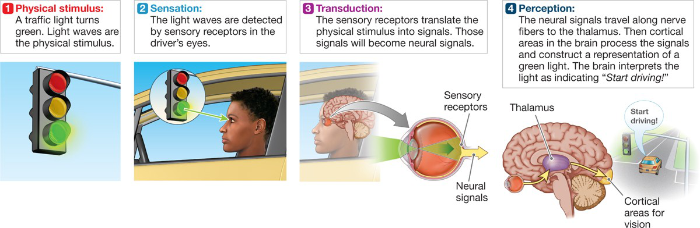
Cảm giác (sensation): kích thích → chuyển đổi → dẫn truyền về não.
Chuyển đổi cảm giác (transduction): biến năng lượng kích thích thành tín hiệu điện, nhờ tế bào thụ cảm ở võng mạc hay tế bào lông ở ốc tai.
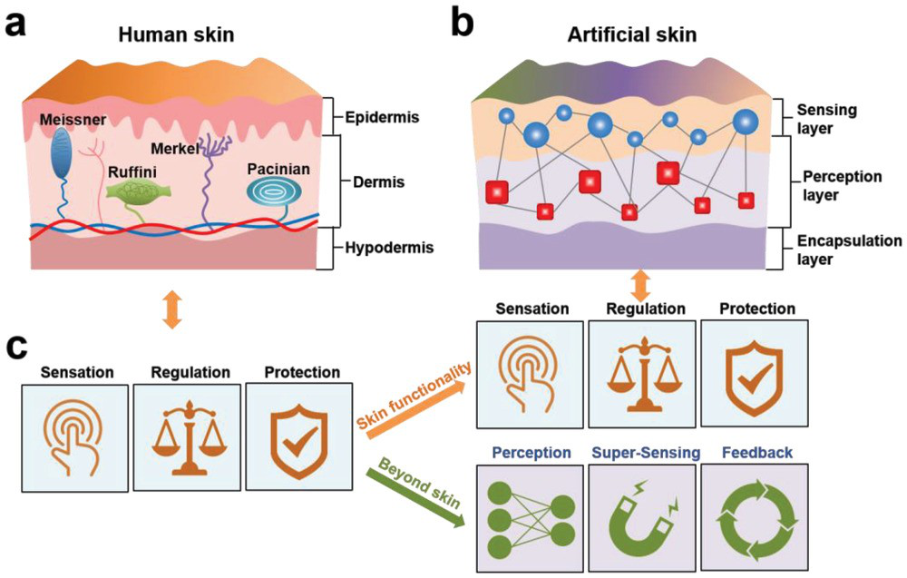
Thụ thể cơ học (mechanoreceptors) ở da nhạy với sức ép, rung và độ trượt.
Khi cầm cốc, tín hiệu từ da giúp chỉnh lực cầm liên tục.
Da nhân tạo (artificial skin) giúp robot đo lực và độ trượt để cầm vật mà không làm vỡ.
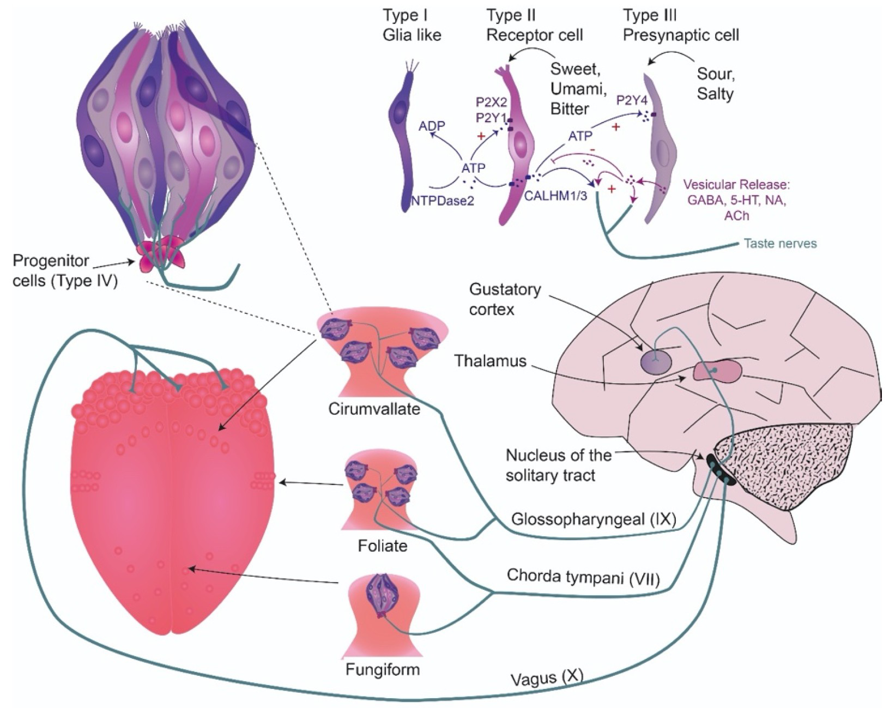
Vị giác (taste): chất hòa tan kích thích tế bào trong nụ vị giác (taste bud). Năm vị cơ bản: ngọt, chua, mặn, đắng, umami.
Khứu giác (smell): phân tử mùi kích thích thụ thể khứu giác trong mũi.
Hương vị (flavor) là vị cộng với mùi: nghẹt mũi thì đồ ăn nhạt đi.
Mức kích thích nhỏ nhất được phát hiện trong 50% số lần thử.
Mức chênh nhỏ nhất giữa hai kích thích mà ta nhận ra.
Quy luật Weber: ΔI / I ≈ k. Thêm 100 g vào túi 1 kg (tăng 10%) dễ nhận ra hơn thêm 100 g vào túi 10 kg (tăng 1%).
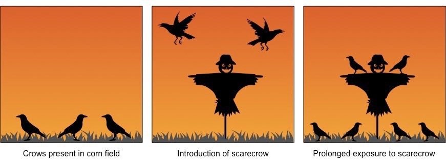
| Quá trình | Mô tả |
|---|---|
| Thích nghi cảm giác (sensory adaptation) | Kích thích kéo dài, không đổi: hệ cảm giác đáp ứng yếu dần. Ví dụ: một lúc sau không còn ngửi thấy nước hoa. |
| Quen dần (habituation) | Kích thích lặp lại mà vô hại: phản ứng giảm dần. Ví dụ: quạ dần không sợ bù nhìn. |
Tổ chức và diễn giải thông tin cảm giác.
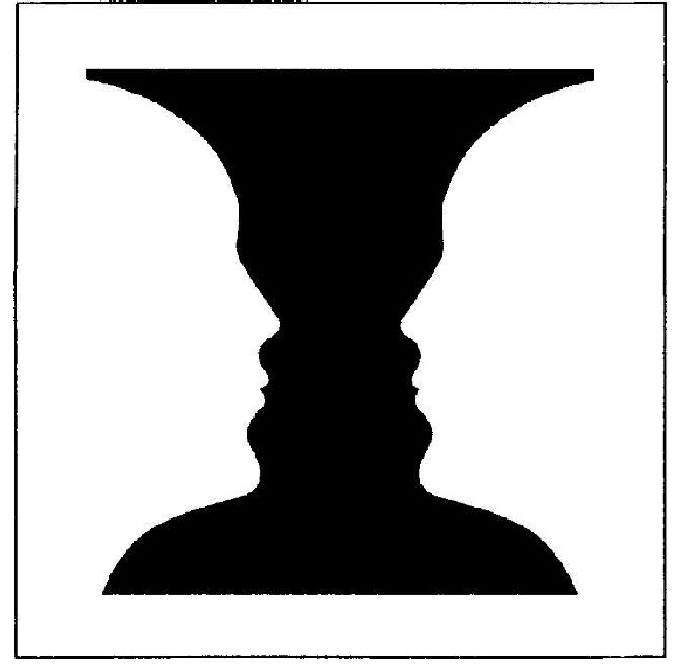
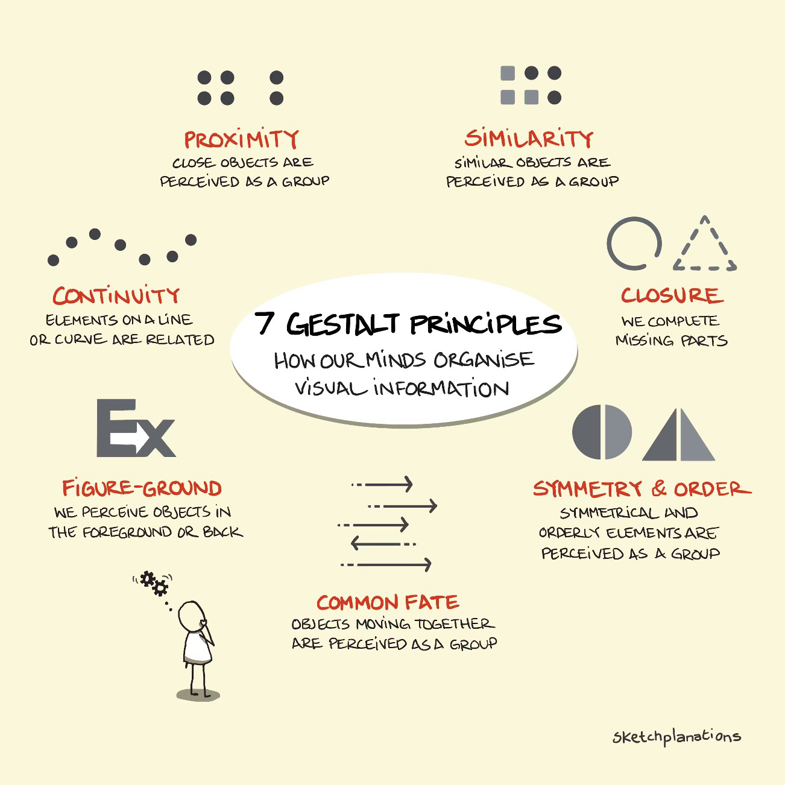
Hình và nền (figure-ground): tách cảnh thành đối tượng nổi bật và phần phía sau.
Gần nhau, giống nhau: dễ được nhóm lại. Khép kín (closure): tự lấp phần thiếu để thấy hình trọn vẹn.
Ghép từ nét, âm, chi tiết của kích thích. Ví dụ: đọc một cuốn sách mới, hiểu dần từng câu.
Dùng kinh nghiệm và kỳ vọng để diễn giải. Ví dụ: nghe bài hát quen, đoán trước lời sau.
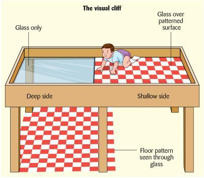
Tín hiệu một mắt (monocular cues): phối cảnh, che khuất, kích thước tương đối.
Tín hiệu hai mắt (binocular cues): ảnh ở hai mắt hơi khác nhau.
Gibson và Walk (1960): “vực thẳm thị giác” (visual cliff).
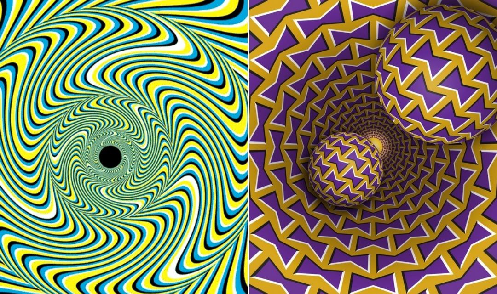
Chuyển động thật · biểu kiến (đèn chớp nối tiếp, phim) · cảm ứng (trăng như trôi sau mây). Vùng MT/V5 của vỏ thị giác chuyên xử lý chuyển động.
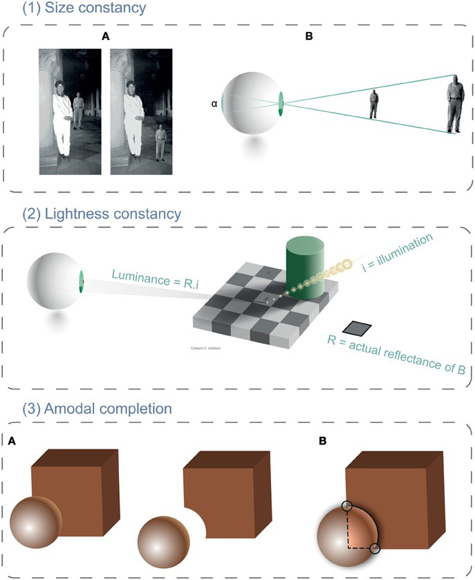
Hằng định kích thước (size constancy): người đi xa có ảnh nhỏ hơn trên võng mạc, nhưng vẫn được nhìn nhận là cao như trước.
Hằng định hình dạng (shape constancy): cánh cửa xoay vẫn được nhận ra là hình chữ nhật.
Hằng định độ sáng (lightness constancy): tờ giấy vẫn trông là trắng khi chuyển vào bóng râm.
Tri giác liên giác quan (cross-modal perception): não ghép thông tin từ nhiều giác quan, như hiệu ứng McGurk hay tiếng nói như phát ra từ miệng con rối khi xem nói tiếng bụng.
Bối cảnh: hai ô xám cùng mã màu trông sáng tối khác nhau.
Văn hóa: giả thuyết “thế giới nhiều góc cạnh”: người lớn lên giữa nhà cửa vuông vức dễ bị ảo ảnh Müller-Lyer đánh lừa hơn.
Tập trung nguồn lực có hạn vào một phần thông tin.
| Dạng chú ý | Ví dụ |
|---|---|
| Chọn lọc (selective) | Theo dõi một giọng nói giữa nhiều giọng nói. |
| Duy trì (sustained) | Theo dõi một bài giải trong vài phút. |
| Chuyển đổi (shifting) | Chuyển từ đọc yêu cầu sang kiểm tra đoạn mã. |
| Chia sẻ (divided) | Vừa nghe hướng dẫn vừa ghi ý chính. |
Đếm số lần chuyền bóng của những người mặc áo trắng.
Giữ kết quả của bạn để trao đổi sau khi xem.
Cherry (1953), nghe hai tai (dichotic listening): với tai bị bỏ qua, chỉ nhận ra giọng đổi từ nam sang nữ, không nhớ nội dung.
| Mô hình | Thông tin ở kênh bị bỏ qua |
|---|---|
| Broadbent (1958) Bộ lọc sớm | Bị chặn ở “nút cổ chai” theo đặc điểm vật lý, trước khi xử lý nghĩa. |
| Treisman (1960) Làm suy giảm | Bị làm yếu chứ không bị chặn; tên mình vẫn có thể lọt qua. |
| Deutsch và Deutsch (1963) Chọn lọc muộn | Vẫn được xử lý nghĩa; chọn ở khâu phản ứng. |
Hiệu ứng tiệc cocktail: bỗng nghe thấy tên mình từ bàn bên.
Mô hình đèn rọi (spotlight), Posner (1980): chú ý như vùng sáng di chuyển được; thứ nằm trong vùng sáng được xử lý nhanh hơn.
Gợi ý đúng chỗ: phản ứng nhanh hơn. Gợi ý sai chỗ: chậm hơn.
Giữ ý câu trước, hiểu câu hiện tại và nối các ý.
Đổi mục tiêu, xử lý nội dung mới rồi tìm lại mạch đang đọc.
Tải nhận thức (cognitive load): lượng xử lý mà nhiệm vụ đòi hỏi từ nguồn lực nhận thức có hạn. Quá tải thì chậm đi và dễ sai.
| Trường hợp | Điều có thể quan sát |
|---|---|
| ADHD | Khó duy trì chú ý, hiếu động và bốc đồng; kéo dài và ảnh hưởng học tập, sinh hoạt. |
| Bỏ quên nửa không gian (hemispatial neglect) | Thường sau tổn thương bán cầu phải, nhất là thùy đỉnh: người bệnh bỏ qua nửa không gian bên trái. |
Ví dụ về bỏ quên nửa không gian: chỉ ăn thức ăn ở nửa bên phải đĩa, vẽ lại bông hoa chỉ có nửa bên phải.
Mã hóa, lưu trữ và truy hồi thông tin.
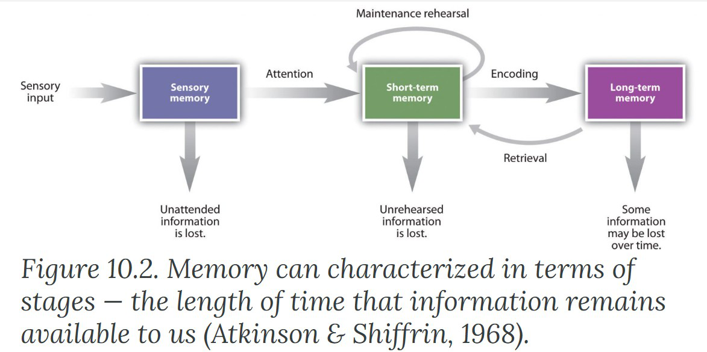
Trí nhớ cảm giác (sensory memory) → trí nhớ ngắn hạn (short-term memory) ↔ trí nhớ dài hạn (long-term memory).
Nhìn vào giữa khung. Chữ hiện khoảng 0,3 giây rồi tắt; ghi ra giấy những chữ còn nhớ.
Sẵn sàng
Làm ba lượt; sau mỗi lượt bấm “Xem lại bảng” để tự đếm số chữ đúng.
| Cách hỏi | Kết quả của Sperling (1960) |
|---|---|
| Kể lại cả bảng 12 chữ | Khoảng 4-5 chữ. |
| Chuông chỉ một hàng ngay khi bảng tắt | Gần đủ hàng đó, dù không biết trước hàng nào: lúc ấy cả bảng vẫn còn trong trí nhớ. |
| Chuông chỉ hàng trễ khoảng 1 giây | Lợi thế gần như mất hết: dấu vết đã phai. |
Trí nhớ hình ảnh (iconic): chứa gần như cả bảng nhưng chỉ khoảng 0,2-0,5 giây.
Trí nhớ âm thanh (echoic): kéo dài 2-4 giây.
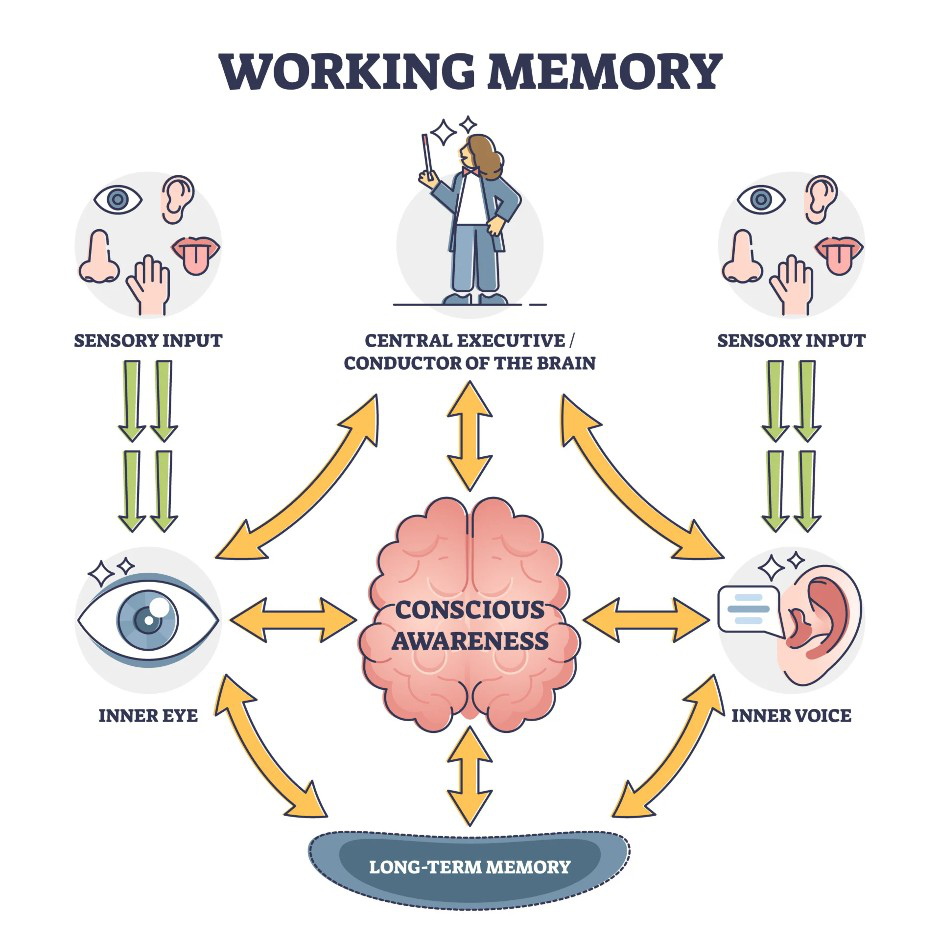
Trí nhớ làm việc (working memory): giữ và xử lý thông tin cho việc đang làm; không nhẩm lại thì mất sau 15-30 giây.
I A I U E T V N U
IAI UET VNU
| Kết quả kinh điển | Cách hiểu |
|---|---|
| Miller (1956): khoảng 7 ± 2 đơn vị | Đơn vị có thể là một nhóm có nghĩa (chunk). |
| Cowan (2001): khoảng 4 đơn vị | Ước lượng khi hạn chế việc gộp nhóm và nhẩm lại. |
| Dạng trí nhớ dài hạn | Ví dụ |
|---|---|
| Tình tiết (episodic) | Nhớ lần đầu bạn đến giảng đường này. |
| Ngữ nghĩa (semantic) | Biết Hà Nội là thủ đô Việt Nam. |
| Kỹ năng (procedural) | Biết đi xe đạp hoặc gõ bàn phím. |
Trí nhớ tường minh (explicit/declarative): nhớ lại sự kiện và kiến thức một cách có ý thức.
Trí nhớ không tường minh (implicit/nondeclarative): kinh nghiệm ảnh hưởng cách làm, có thể không cần nhớ lại lần học.
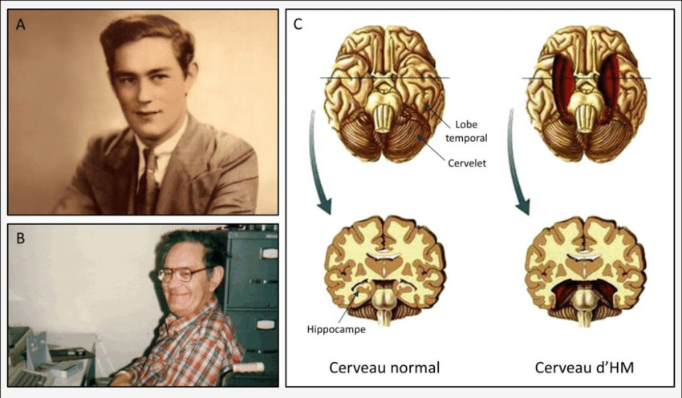
Henry Molaison (H.M.): phẫu thuật vùng thái dương trong hai bên năm 1953 để chữa động kinh.
Mất trí nhớ thuận chiều (anterograde amnesia): khó tạo ký ức tường minh mới, nhưng vẫn học được kỹ năng.
Mất trí nhớ ngược chiều (retrograde amnesia): khó nhớ lại điều xảy ra trước tổn thương.
Hồi hải mã (hippocampus): then chốt để tạo ký ức tường minh.
Xử lý nông (hình dạng, âm) hay sâu (ý nghĩa). Xử lý sâu thì nhớ lâu hơn.
Nhớ lại (recall): tự nêu ra. Nhận lại (recognition): chọn trong các phương án.
Gợi ý truy hồi: học và kiểm tra trong cùng bối cảnh hay trạng thái thì dễ nhớ hơn.
có cánh · biết bay
có vây · biết bơi
Mạng ngữ nghĩa (semantic network): khái niệm là các nút; thuộc tính lưu ở cấp chung nhất và được kế thừa, ngoại lệ lưu riêng.
| Chiều ảnh hưởng | Ví dụ |
|---|---|
| Cũ cản trở mới (proactive interference) | Cứ nhớ ra tên các bạn lớp năm ngoái nên khó thuộc tên lớp năm nay. |
| Mới cản trở cũ (retroactive interference) | Thuộc tên lớp năm nay rồi thì khó nhớ lại tên lớp năm ngoái. |
Hai nội dung càng giống nhau thì càng dễ cản trở nhau.
Ký ức chớp sáng (flashbulb memory): nhớ rất rõ lúc biết một tin chấn động; tự tin hơn nhưng không đúng hơn ký ức thường.
Loftus và Palmer (1974): xem phim va chạm xe, rồi bị hỏi tốc độ bằng các từ khác nhau.
| Từ trong câu hỏi | Nói đã thấy kính vỡ, sau một tuần |
|---|---|
| “Smashed” · đâm sầm | 32% (16/50) |
| “Hit” · va vào | 14% (7/50) |
| Không hỏi về tốc độ | 12% (6/50) |
Trong phim không có kính vỡ (thí nghiệm 2).
Cảm giác → tri giác → chú ý → trí nhớ: cùng phối hợp trong mỗi việc ta làm.
Mở Quiz cuối buổi 4 trên Canvas.
10 câu về nhận thức, cảm giác, tri giác, chú ý và trí nhớ.
Dùng bản trên Canvas. Khi đọc, xác định nhiệm vụ, dự đoán, kết quả và cách tác giả giải thích.